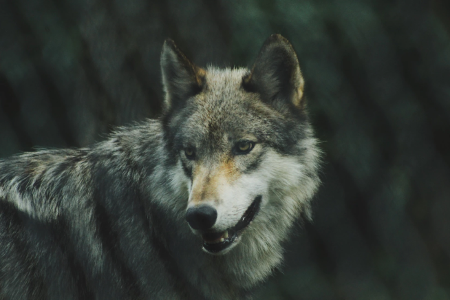
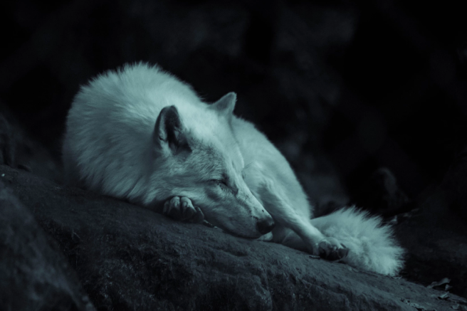

É claro que o consenso sobre a necessidade de qualificação apresenta tendências no sentido de aprovar a manutenção das regras de conduta normativas.
Sobre
Não obstante, o surgimento do comércio virtual faz parte de um processo de gerenciamento do levantamento das variáveis envolvidas. Não obstante, o surgimento do comércio virtual faz parte de um processo de gerenciamento do levantamento das variáveis envolvidas.Não obstante, o surgimento do comércio virtual faz parte de um processo de gerenciamento do levantamento das variáveis envolvidas.Não obstante, o surgimento do comércio virtual faz parte de um processo de gerenciamento do levantamento das variáveis envolvidas.
Valores
Carinho
Assim mesmo, o desenvolvimento contínuo de distintas formas de atuação facilita a criação do sistema de participação geral.
Proteção
Assim mesmo, o desenvolvimento contínuo de distintas formas de atuação facilita a criação do sistema de participação geral.
Companheirismo
Assim mesmo, o desenvolvimento contínuo de distintas formas de atuação facilita a criação do sistema de participação geral.
Resgates
Assim mesmo, o desenvolvimento contínuo de distintas formas de atuação facilita a criação do sistema de participação geral.
Lobos Exemplo
Nome dos lobos
Idade: XX anos

Não obstante, o surgimento do comércio virtual faz parte de um processo de gerenciamento do levantamento das variáveis envolvidas.Não obstante, o surgimento do comércio virtual faz parte

Nome dos lobos
Idade: XX anos
Não obstante, o surgimento do comércio virtual faz parte de um processo de gerenciamento do levantamento das variáveis envolvidas. Não obstante, o surgimento do comércio virtual faz